Visualize Association Rules and Itemsets
This is the S3 method to visualize association rules and itemsets. Implemented are several popular visualization methods including scatter plots with shading (two-key plots), graph based visualizations, doubledecker plots, etc.
Interactive plotting with plotly is available with plotly_arules.
# S3 method for rules plot(x, method = NULL, measure = "support", shading = "lift", interactive = FALSE, data = NULL, control = NULL, ...) # S3 method for itemsets plot(x, method = NULL, measure = "support", shading = NA, interactive=FALSE, data = NULL, control = NULL, ...)
Arguments
- x
- an object of class "rules" or "itemsets".
- method
- a string with value "scatterplot", "two-key plot", "matrix", "matrix3D", "mosaic", "doubledecker", "graph", "paracoord" or "grouped", "iplots" selecting the visualization method (see Details).
- measure
- measure(s) of interestingness
(e.g., "support", "confidence", "lift", "order") used in the visualization. Some
visualization methods need one measure, others take a vector with two
measures (e.g., scatterplot). In some plots (e.g., graphs)
NAcan be used to suppress using a measure. - shading
- measure of interestingness used
for the color of the points/arrows/nodes
(e.g., "support", "confidence", "lift"). The default is "lift".
NAcan be often used to suppress shading. - interactive
- enable interactive exploration (not implemented by all methods).
- control
- a list of control parameters for the plot. The available control parameters depends on the visualization technique (see Details).
- data
- the dataset (class "transactions") used to generate the rules/itemsets. Only "mosaic" and "doubledecker" require the original data.
- …
- further arguments are usually passed on to the low level plotting function. For scatterplot it is added for convenience to the control list (see above).
Details
Most visualization techniques are described by Bruzzese and Davino (2008),
however, we added more color shading, reordering and interactive features.
Many visualization methods take extra parameters as a list in the control parameter. Some of the parameters are described below. Use verbose mode with, e.g., plot(rules, method = "graph", control = list(verbose = TRUE)) to get a complete list of parameters and theit default values.
The following visualization method are available:
- "scatterplot", "two-key plot"
-
This visualization method draws a two dimensional scatterplot with different
measures of interestingness (parameter "measure") on the axes and a third
measure (parameter "shading") is represented by the color of the points.
There is a special value for shading called "order" which produces a
two-key plot where the color of the points represents the length (order)
of the rule.
Interactive manipulations are available.
The list of control parameters for this method is:
- "main"
- plot title
- "pch"
- use filled symbols: 20--25
- "cex"
- symbol size
- "xlim","ylim"
- limits
- "jitter"
- a number greater than 0 adds jitter to the points. If overplotting would occur, jitter defaults to .1.
- "col"
- color palette
- "matrix", "matrix3D"
-
Arranges the association rules as a matrix with the itemsets in the antecedents
on one axis and the itemsets in the consequents on the other. The interest
measure is either visualized by a color (darker means a higher value for the
measure) or as the height of a bar (method "matrix3D").
Currently there is no interactive version available.
The list of control parameters for this method is:
- "main"
- plot title
- "type"
- defines the way the data is rendered: "grid", "image" or "3D" (scatterplot3d)
- "reorder"
- if
TRUEthen the itemsets on the x and y-axes are reordered to bring rules with similar values for the interest measure closer together and make the plot clearer. - "orderBy"
- specifies the measure of interest for reordering (default is the visualized measure)
- "reorderMethod","reorderControl","reorderDist"
- seriation method, control arguments and distance method (default "euclidean")
used for reordering (see
seriate()method in seriation) - "col"
- a vector of n colors used for the plot (default: 100 heat colors)
- "xlim","ylim"
- limits
- "grouped"
-
Grouped matrix-based visualization (Hahsler and Karpienko, 2016; Hahsler 2016).
Antecedents (columns) in the matrix are
grouped using clustering. Groups are represented by the most
interesting item (highest ratio of support in the group to support in all rules)
in the group. Balloons
in the matrix are used to represent with what consequent the antecedents are
connected.
Interactive manipulations are available. They can be used to zoom into groups and identify rules.
The list of control parameters for this method is:
- "main"
- plot title
- "k"
- number of antecedent groups (default: 20)
- "rhs_max"
- maximal number of RHSs to show. The rest are suppressed. (default: 10)
- "lhs_items"
- number of LHS items shown (default: 2)
- "aggr.fun"
- aggregation function can be any function computing a scalar from a vector (e.g., min, mean, median (default), sum, max). It is also used to reorder the balloons in the plot.
- "col"
- color palette (default is 100 heat colors.)
- "gp_labels", "gp_main", "gp_labs", "gp_lines"
gpar()objects used to specify color, font and font size for different elements.
- "graph"
-
Represents the rules (or itemsets) as a graph.
Control arguments are:
- "main"
- plot title
- "cex"
- cex for labels
- "itemLabels"
- display item/itemset names instead of ids (
TRUE) - "edgeCol", "nodeCol"
- color palettes for edges and nodes.
- "measureLabels"
- display values of interest measures (
FALSE) - "precision"
- number of digits for numbers in plot.
- "type"
- vertices represent: "items" (default) or "itemsets"
- "engine"
- graph layout engine: "igraph" (default) or "graphviz"
- "layout"
- layout algorithm defined in igraph or Rgraphviz (default: igraph::nicely which usually does a Fruchterman-Reingold layout for engine igraph and "dot"/"neato" for graphviz)
- "arrowSize"
- [0,1]
- "alpha"
- alpha transparency value (default .8; set to 1 for no transparency)
For the igraph engine the used plot function is
plot.igraphin igraph. For graphviz the functionplotin Rgraphviz is used. Note that Rgraphviz is available at http://www.bioconductor.org/. For the interactive versiontkplotin igraph is always used....arguments are passed on to the respective plotting function (use for color, etc.). - "doubledecker", "mosaic"
-
Represents a single rule as a doubledecker or mosaic plot.
Parameter data has to be specified to compute the needed contingency
table.
Available control parameters are:
- "main"
- plot title
- "paracoord"
-
Represents the rules (or itemsets) as a parallel coordinate plot.
Currently there is no interactive version available.
Available control parameters are:
- "main"
- plot title
- "reorder"
- reorder to minimize crossing lines.
- "alpha"
- alpha transparency value
- "iplots"
- Experimental interactive plots (package iplots) which support selection, highlighting, brushing, etc. Currently plots a scatterplot (support vs. confidence) and several histograms. Interactive manipulations are available.
Value
Several interactive plots return a set of selected rules/itemsets. Other plots might return other data structures. For example graph-based plots return the graph (invisibly).
References
Bruzzese, D. and Davino, C. (2008), Visual Mining of Association Rules, in Visual Data Mining: Theory, Techniques and Tools for Visual Analytics, Springer-Verlag, pp. 103--122.
Hahsler, M. and Karpienko, R. (2016) Visualizing Association Rules in Hierarchical Groups. Journal of Business Economics, accepted for publication, 2016.
Hahsler, M. (2016) Grouping association rules using lift. In C. Iyigun, R. Moghaddess, and A. Oztekin, editors, 11th INFORMS Workshop on Data Mining and Decision Analytics (DM-DA 2016).
See also
plotly_arules,
scatterplot3d in scatterplot3d,
plot.igraph and
tkplot in igraph,
seriate in seriation
Examples
data(Groceries) rules <- apriori(Groceries, parameter=list(support=0.001, confidence=0.8))#> Apriori #> #> Parameter specification: #> confidence minval smax arem aval originalSupport maxtime support minlen #> 0.8 0.1 1 none FALSE TRUE 5 0.001 1 #> maxlen target ext #> 10 rules FALSE #> #> Algorithmic control: #> filter tree heap memopt load sort verbose #> 0.1 TRUE TRUE FALSE TRUE 2 TRUE #> #> Absolute minimum support count: 9 #> #> set item appearances ...[0 item(s)] done [0.00s]. #> set transactions ...[169 item(s), 9835 transaction(s)] done [0.01s]. #> sorting and recoding items ... [157 item(s)] done [0.00s]. #> creating transaction tree ... done [0.01s]. #> checking subsets of size 1 2 3 4 5 6 done [0.02s]. #> writing ... [410 rule(s)] done [0.00s]. #> creating S4 object ... done [0.01s].rules#> set of 410 rules## Scatterplot plot(rules)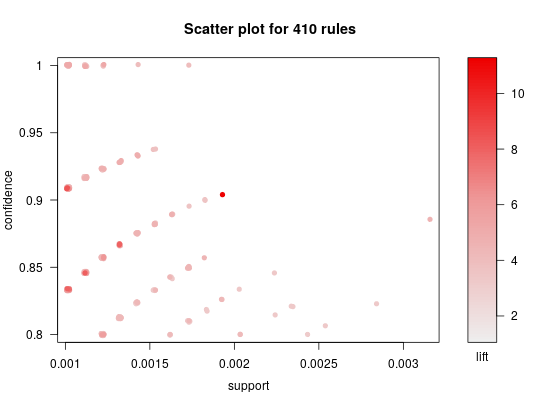## try: sel <- plot(rules, interactive=TRUE) ## Scatterplot with custom colors library(colorspace) # for sequential_hcl plot(rules, control = list(col=sequential_hcl(100)))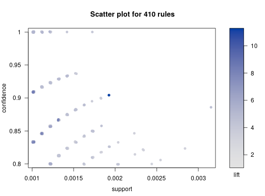plot(rules, control = list(col=grey.colors(50, alpha =.8)))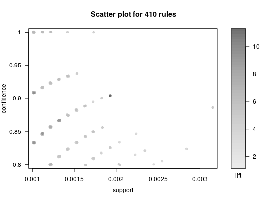## see all control options plot(rules, control = list(verbose = TRUE))#> Used control parameters: #> main = Scatter plot for 410 rules #> interactive = FALSE #> pch = 19 #> cex = 0.5 #> xlim = NULL #> ylim = NULL #> zlim = NULL #> alpha = NULL #> col = c("#EE0000FF", "#EE0303FF", "#EE0606FF", "#EE0909FF", "#EE0C0CFF", "#EE0F0FFF", "#EE1212FF", "#EE1515FF", "#EE1818FF", "#EE1B1BFF", "#EE1E1EFF", "#EE2222FF", "#EE2525FF", "#EE2828FF", "#EE2B2BFF", "#EE2E2EFF", "#EE3131FF", "#EE3434FF", "#EE3737FF", "#EE3A3AFF", "#EE3D3DFF", "#EE4040FF", "#EE4444FF", "#EE4747FF", "#EE4A4AFF", "#EE4D4DFF", "#EE5050FF", "#EE5353FF", "#EE5656FF", "#EE5959FF", "#EE5C5CFF", "#EE5F5FFF", "#EE6262FF", "#EE6666FF", "#EE6969FF", "#EE6C6CFF", "#EE6F6FFF", "#EE7272FF", "#EE7575FF", "#EE7878FF", "#EE7B7BFF", "#EE7E7EFF", "#EE8181FF", "#EE8484FF", "#EE8888FF", "#EE8B8BFF", "#EE8E8EFF", "#EE9191FF", "#EE9494FF", "#EE9797FF", "#EE9999FF", "#EE9B9BFF", "#EE9D9DFF", "#EE9F9FFF", "#EEA0A0FF", "#EEA2A2FF", "#EEA4A4FF", "#EEA5A5FF", "#EEA7A7FF", "#EEA9A9FF", "#EEABABFF", "#EEACACFF", "#EEAEAEFF", "#EEB0B0FF", "#EEB1B1FF", "#EEB3B3FF", "#EEB5B5FF", "#EEB7B7FF", "#EEB8B8FF", "#EEBABAFF", "#EEBCBCFF", "#EEBDBDFF", "#EEBFBFFF", "#EEC1C1FF", "#EEC3C3FF", "#EEC4C4FF", "#EEC6C6FF", "#EEC8C8FF", "#EEC9C9FF", "#EECBCBFF", "#EECDCDFF", "#EECFCFFF", "#EED0D0FF", "#EED2D2FF", "#EED4D4FF", "#EED5D5FF", "#EED7D7FF", "#EED9D9FF", "#EEDBDBFF", "#EEDCDCFF", "#EEDEDEFF", "#EEE0E0FF", "#EEE1E1FF", "#EEE3E3FF", "#EEE5E5FF", "#EEE7E7FF", "#EEE8E8FF", "#EEEAEAFF", "#EEECECFF", "#EEEEEEFF") #> newpage = TRUE #> jitter = NA #> verbose = TRUE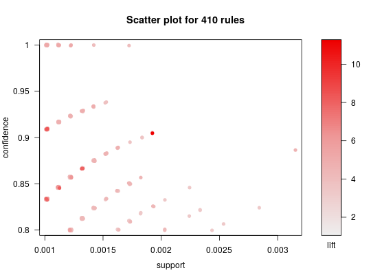## Two-key plot is a scatterplot with shading = "order" plot(rules, shading="order", control = list(main = "Two-key plot", col=rainbow(max(size(rules))-1L)))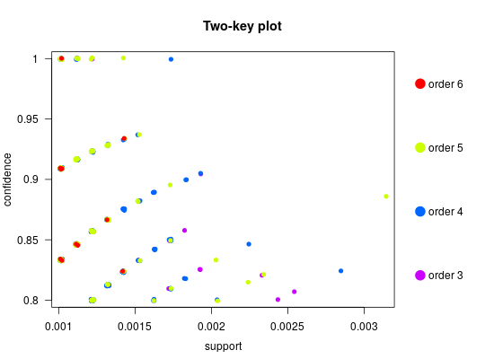## The following techniques work better with fewer rules subrules <- subset(rules, lift>5) subrules#> set of 32 rules## 2D matrix with shading plot(subrules, method="matrix", measure="lift")#> Itemsets in Antecedent (LHS) #> [1] "{liquor,red/blush wine}" #> [2] "{citrus fruit,root vegetables,soft cheese}" #> [3] "{citrus fruit,grapes,fruit/vegetable juice}" #> [4] "{other vegetables,butter milk,pastry}" #> [5] "{sausage,pip fruit,sliced cheese}" #> [6] "{whipped/sour cream,cream cheese ,margarine}" #> [7] "{root vegetables,butter,cream cheese }" #> [8] "{tropical fruit,butter,white bread}" #> [9] "{beef,tropical fruit,butter}" #> [10] "{pork,tropical fruit,fruit/vegetable juice}" #> [11] "{pip fruit,whipped/sour cream,brown bread}" #> [12] "{tropical fruit,butter,margarine}" #> [13] "{whipped/sour cream,pastry,fruit/vegetable juice}" #> [14] "{other vegetables,whole milk,yogurt,rice}" #> [15] "{tropical fruit,grapes,whole milk,yogurt}" #> [16] "{ham,tropical fruit,pip fruit,yogurt}" #> [17] "{ham,pip fruit,other vegetables,yogurt}" #> [18] "{ham,tropical fruit,pip fruit,whole milk}" #> [19] "{tropical fruit,whole milk,butter,sliced cheese}" #> [20] "{tropical fruit,other vegetables,whole milk,oil}" #> [21] "{other vegetables,curd,whipped/sour cream,cream cheese }" #> [22] "{whole milk,curd,whipped/sour cream,cream cheese }" #> [23] "{tropical fruit,other vegetables,butter,white bread}" #> [24] "{beef,citrus fruit,tropical fruit,other vegetables}" #> [25] "{tropical fruit,other vegetables,butter,curd}" #> [26] "{tropical fruit,whole milk,butter,curd}" #> [27] "{tropical fruit,root vegetables,whole milk,margarine}" #> [28] "{tropical fruit,butter,whipped/sour cream,fruit/vegetable juice}" #> [29] "{whole milk,rolls/buns,soda,newspapers}" #> [30] "{citrus fruit,other vegetables,soda,fruit/vegetable juice}" #> [31] "{citrus fruit,tropical fruit,root vegetables,whipped/sour cream}" #> [32] "{tropical fruit,other vegetables,whole milk,yogurt,oil}" #> Itemsets in Consequent (RHS) #> [1] "{bottled beer}" "{other vegetables}" "{tropical fruit}" #> [4] "{yogurt}" "{root vegetables}"plot(subrules, method="matrix", measure="lift", control=list(reorder=TRUE))#> Itemsets in Antecedent (LHS) #> [1] "{liquor,red/blush wine}" #> [2] "{citrus fruit,grapes,fruit/vegetable juice}" #> [3] "{ham,pip fruit,other vegetables,yogurt}" #> [4] "{other vegetables,curd,whipped/sour cream,cream cheese }" #> [5] "{root vegetables,butter,cream cheese }" #> [6] "{tropical fruit,other vegetables,butter,white bread}" #> [7] "{tropical fruit,whole milk,butter,sliced cheese}" #> [8] "{tropical fruit,whole milk,butter,curd}" #> [9] "{sausage,pip fruit,sliced cheese}" #> [10] "{tropical fruit,butter,white bread}" #> [11] "{tropical fruit,butter,margarine}" #> [12] "{whole milk,curd,whipped/sour cream,cream cheese }" #> [13] "{tropical fruit,other vegetables,butter,curd}" #> [14] "{whipped/sour cream,cream cheese ,margarine}" #> [15] "{beef,tropical fruit,butter}" #> [16] "{tropical fruit,root vegetables,whole milk,margarine}" #> [17] "{pork,tropical fruit,fruit/vegetable juice}" #> [18] "{other vegetables,butter milk,pastry}" #> [19] "{whipped/sour cream,pastry,fruit/vegetable juice}" #> [20] "{citrus fruit,root vegetables,soft cheese}" #> [21] "{ham,tropical fruit,pip fruit,yogurt}" #> [22] "{citrus fruit,tropical fruit,root vegetables,whipped/sour cream}" #> [23] "{pip fruit,whipped/sour cream,brown bread}" #> [24] "{ham,tropical fruit,pip fruit,whole milk}" #> [25] "{whole milk,rolls/buns,soda,newspapers}" #> [26] "{tropical fruit,butter,whipped/sour cream,fruit/vegetable juice}" #> [27] "{tropical fruit,grapes,whole milk,yogurt}" #> [28] "{beef,citrus fruit,tropical fruit,other vegetables}" #> [29] "{other vegetables,whole milk,yogurt,rice}" #> [30] "{tropical fruit,other vegetables,whole milk,oil}" #> [31] "{citrus fruit,other vegetables,soda,fruit/vegetable juice}" #> [32] "{tropical fruit,other vegetables,whole milk,yogurt,oil}" #> Itemsets in Consequent (RHS) #> [1] "{root vegetables}" "{tropical fruit}" "{bottled beer}" #> [4] "{other vegetables}" "{yogurt}"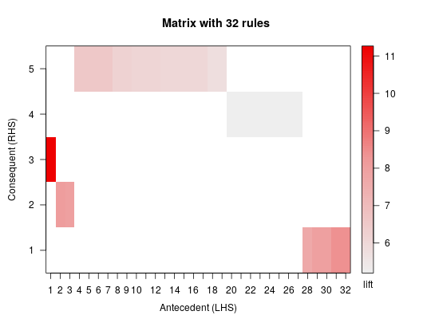## 3D matrix plot(subrules, method="matrix3D", measure="lift")#> Itemsets in Antecedent (LHS) #> [1] "{liquor,red/blush wine}" #> [2] "{citrus fruit,root vegetables,soft cheese}" #> [3] "{citrus fruit,grapes,fruit/vegetable juice}" #> [4] "{other vegetables,butter milk,pastry}" #> [5] "{sausage,pip fruit,sliced cheese}" #> [6] "{whipped/sour cream,cream cheese ,margarine}" #> [7] "{root vegetables,butter,cream cheese }" #> [8] "{tropical fruit,butter,white bread}" #> [9] "{beef,tropical fruit,butter}" #> [10] "{pork,tropical fruit,fruit/vegetable juice}" #> [11] "{pip fruit,whipped/sour cream,brown bread}" #> [12] "{tropical fruit,butter,margarine}" #> [13] "{whipped/sour cream,pastry,fruit/vegetable juice}" #> [14] "{other vegetables,whole milk,yogurt,rice}" #> [15] "{tropical fruit,grapes,whole milk,yogurt}" #> [16] "{ham,tropical fruit,pip fruit,yogurt}" #> [17] "{ham,pip fruit,other vegetables,yogurt}" #> [18] "{ham,tropical fruit,pip fruit,whole milk}" #> [19] "{tropical fruit,whole milk,butter,sliced cheese}" #> [20] "{tropical fruit,other vegetables,whole milk,oil}" #> [21] "{other vegetables,curd,whipped/sour cream,cream cheese }" #> [22] "{whole milk,curd,whipped/sour cream,cream cheese }" #> [23] "{tropical fruit,other vegetables,butter,white bread}" #> [24] "{beef,citrus fruit,tropical fruit,other vegetables}" #> [25] "{tropical fruit,other vegetables,butter,curd}" #> [26] "{tropical fruit,whole milk,butter,curd}" #> [27] "{tropical fruit,root vegetables,whole milk,margarine}" #> [28] "{tropical fruit,butter,whipped/sour cream,fruit/vegetable juice}" #> [29] "{whole milk,rolls/buns,soda,newspapers}" #> [30] "{citrus fruit,other vegetables,soda,fruit/vegetable juice}" #> [31] "{citrus fruit,tropical fruit,root vegetables,whipped/sour cream}" #> [32] "{tropical fruit,other vegetables,whole milk,yogurt,oil}" #> Itemsets in Consequent (RHS) #> [1] "{bottled beer}" "{other vegetables}" "{tropical fruit}" #> [4] "{yogurt}" "{root vegetables}"plot(subrules, method="matrix3D", measure="lift", control=list(reorder=TRUE))#> Itemsets in Antecedent (LHS) #> [1] "{liquor,red/blush wine}" #> [2] "{citrus fruit,grapes,fruit/vegetable juice}" #> [3] "{ham,pip fruit,other vegetables,yogurt}" #> [4] "{other vegetables,curd,whipped/sour cream,cream cheese }" #> [5] "{tropical fruit,whole milk,butter,sliced cheese}" #> [6] "{root vegetables,butter,cream cheese }" #> [7] "{tropical fruit,other vegetables,butter,white bread}" #> [8] "{tropical fruit,whole milk,butter,curd}" #> [9] "{sausage,pip fruit,sliced cheese}" #> [10] "{tropical fruit,butter,margarine}" #> [11] "{whole milk,curd,whipped/sour cream,cream cheese }" #> [12] "{tropical fruit,butter,white bread}" #> [13] "{tropical fruit,root vegetables,whole milk,margarine}" #> [14] "{beef,tropical fruit,butter}" #> [15] "{pork,tropical fruit,fruit/vegetable juice}" #> [16] "{whipped/sour cream,cream cheese ,margarine}" #> [17] "{tropical fruit,other vegetables,butter,curd}" #> [18] "{other vegetables,butter milk,pastry}" #> [19] "{whipped/sour cream,pastry,fruit/vegetable juice}" #> [20] "{ham,tropical fruit,pip fruit,yogurt}" #> [21] "{citrus fruit,root vegetables,soft cheese}" #> [22] "{citrus fruit,tropical fruit,root vegetables,whipped/sour cream}" #> [23] "{tropical fruit,grapes,whole milk,yogurt}" #> [24] "{whole milk,rolls/buns,soda,newspapers}" #> [25] "{pip fruit,whipped/sour cream,brown bread}" #> [26] "{tropical fruit,butter,whipped/sour cream,fruit/vegetable juice}" #> [27] "{ham,tropical fruit,pip fruit,whole milk}" #> [28] "{beef,citrus fruit,tropical fruit,other vegetables}" #> [29] "{other vegetables,whole milk,yogurt,rice}" #> [30] "{tropical fruit,other vegetables,whole milk,oil}" #> [31] "{citrus fruit,other vegetables,soda,fruit/vegetable juice}" #> [32] "{tropical fruit,other vegetables,whole milk,yogurt,oil}" #> Itemsets in Consequent (RHS) #> [1] "{yogurt}" "{other vegetables}" "{bottled beer}" #> [4] "{tropical fruit}" "{root vegetables}"## matrix with two measures plot(subrules, method="matrix", measure=c("lift", "confidence"))#> Itemsets in Antecedent (LHS) #> [1] "{liquor,red/blush wine}" #> [2] "{citrus fruit,root vegetables,soft cheese}" #> [3] "{citrus fruit,grapes,fruit/vegetable juice}" #> [4] "{other vegetables,butter milk,pastry}" #> [5] "{sausage,pip fruit,sliced cheese}" #> [6] "{whipped/sour cream,cream cheese ,margarine}" #> [7] "{root vegetables,butter,cream cheese }" #> [8] "{tropical fruit,butter,white bread}" #> [9] "{beef,tropical fruit,butter}" #> [10] "{pork,tropical fruit,fruit/vegetable juice}" #> [11] "{pip fruit,whipped/sour cream,brown bread}" #> [12] "{tropical fruit,butter,margarine}" #> [13] "{whipped/sour cream,pastry,fruit/vegetable juice}" #> [14] "{other vegetables,whole milk,yogurt,rice}" #> [15] "{tropical fruit,grapes,whole milk,yogurt}" #> [16] "{ham,tropical fruit,pip fruit,yogurt}" #> [17] "{ham,pip fruit,other vegetables,yogurt}" #> [18] "{ham,tropical fruit,pip fruit,whole milk}" #> [19] "{tropical fruit,whole milk,butter,sliced cheese}" #> [20] "{tropical fruit,other vegetables,whole milk,oil}" #> [21] "{other vegetables,curd,whipped/sour cream,cream cheese }" #> [22] "{whole milk,curd,whipped/sour cream,cream cheese }" #> [23] "{tropical fruit,other vegetables,butter,white bread}" #> [24] "{beef,citrus fruit,tropical fruit,other vegetables}" #> [25] "{tropical fruit,other vegetables,butter,curd}" #> [26] "{tropical fruit,whole milk,butter,curd}" #> [27] "{tropical fruit,root vegetables,whole milk,margarine}" #> [28] "{tropical fruit,butter,whipped/sour cream,fruit/vegetable juice}" #> [29] "{whole milk,rolls/buns,soda,newspapers}" #> [30] "{citrus fruit,other vegetables,soda,fruit/vegetable juice}" #> [31] "{citrus fruit,tropical fruit,root vegetables,whipped/sour cream}" #> [32] "{tropical fruit,other vegetables,whole milk,yogurt,oil}" #> Itemsets in Consequent (RHS) #> [1] "{bottled beer}" "{other vegetables}" "{tropical fruit}" #> [4] "{yogurt}" "{root vegetables}"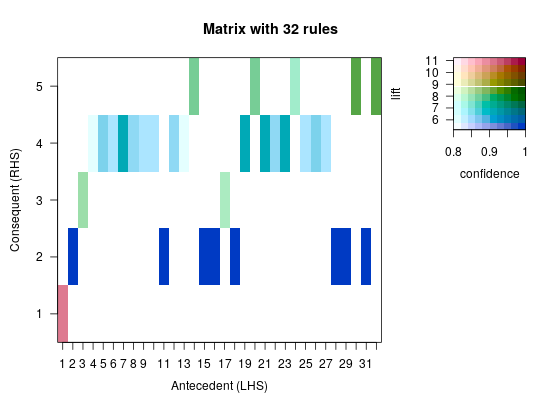plot(subrules, method="matrix", measure=c("lift", "confidence"), control=list(reorder=TRUE))#> Itemsets in Antecedent (LHS) #> [1] "{citrus fruit,other vegetables,soda,fruit/vegetable juice}" #> [2] "{tropical fruit,other vegetables,whole milk,yogurt,oil}" #> [3] "{tropical fruit,other vegetables,whole milk,oil}" #> [4] "{other vegetables,whole milk,yogurt,rice}" #> [5] "{beef,citrus fruit,tropical fruit,other vegetables}" #> [6] "{tropical fruit,other vegetables,butter,white bread}" #> [7] "{root vegetables,butter,cream cheese }" #> [8] "{other vegetables,curd,whipped/sour cream,cream cheese }" #> [9] "{tropical fruit,whole milk,butter,sliced cheese}" #> [10] "{tropical fruit,whole milk,butter,curd}" #> [11] "{sausage,pip fruit,sliced cheese}" #> [12] "{whole milk,curd,whipped/sour cream,cream cheese }" #> [13] "{tropical fruit,butter,margarine}" #> [14] "{tropical fruit,butter,white bread}" #> [15] "{tropical fruit,root vegetables,whole milk,margarine}" #> [16] "{whipped/sour cream,cream cheese ,margarine}" #> [17] "{beef,tropical fruit,butter}" #> [18] "{pork,tropical fruit,fruit/vegetable juice}" #> [19] "{tropical fruit,other vegetables,butter,curd}" #> [20] "{whipped/sour cream,pastry,fruit/vegetable juice}" #> [21] "{other vegetables,butter milk,pastry}" #> [22] "{tropical fruit,butter,whipped/sour cream,fruit/vegetable juice}" #> [23] "{citrus fruit,tropical fruit,root vegetables,whipped/sour cream}" #> [24] "{tropical fruit,grapes,whole milk,yogurt}" #> [25] "{citrus fruit,root vegetables,soft cheese}" #> [26] "{ham,tropical fruit,pip fruit,yogurt}" #> [27] "{pip fruit,whipped/sour cream,brown bread}" #> [28] "{ham,tropical fruit,pip fruit,whole milk}" #> [29] "{whole milk,rolls/buns,soda,newspapers}" #> [30] "{ham,pip fruit,other vegetables,yogurt}" #> [31] "{citrus fruit,grapes,fruit/vegetable juice}" #> [32] "{liquor,red/blush wine}" #> Itemsets in Consequent (RHS) #> [1] "{yogurt}" "{other vegetables}" "{bottled beer}" #> [4] "{tropical fruit}" "{root vegetables}"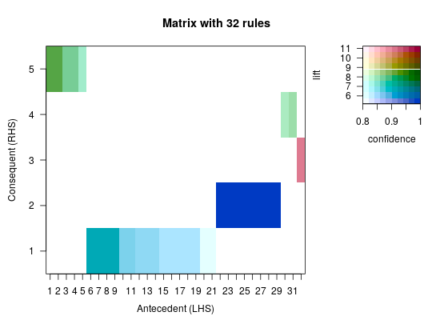## try: plot(subrules, method="matrix", measure="lift", interactive=TRUE, ## control=list(reorder=TRUE)) ## grouped matrix plot plot(rules, method="grouped")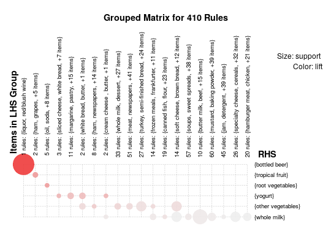plot(rules, method="grouped", control = list(col = grey.colors(10), gp_labels= gpar(col = "blue", cex=1, fontface="italic")))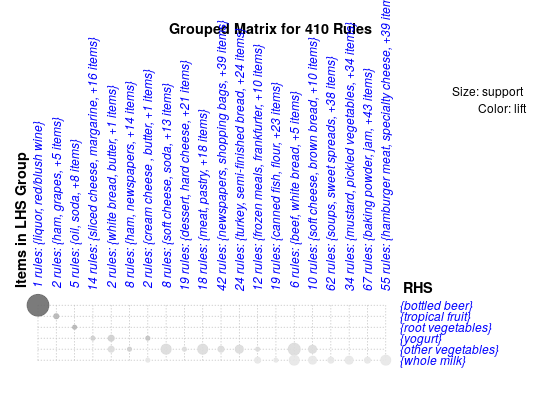## try: sel <- plot(rules, method="grouped", interactive=TRUE) ## graphs only work well with very few rules subrules2 <- sample(subrules, 25) plot(subrules2, method="graph")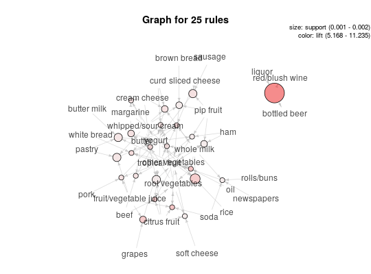plot(subrules2, method="graph", control = list(nodeCol = grey.colors(10), edgeCol = grey(.7), alpha = 1))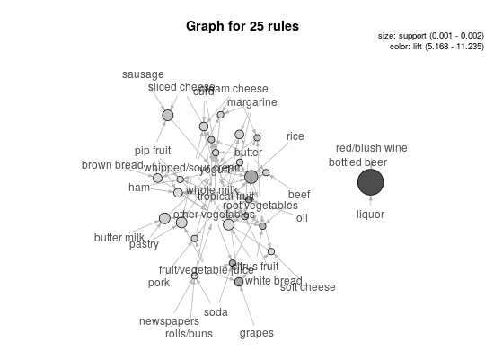## igraph layout generators can be used (see ? igraph::layout_) plot(subrules2, method="graph", control=list(layout=igraph::in_circle()))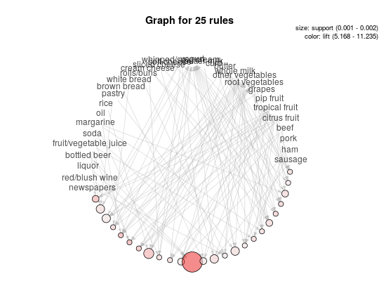plot(subrules2, method="graph", control=list( layout=igraph::with_graphopt(spring.const=5, mass=50)))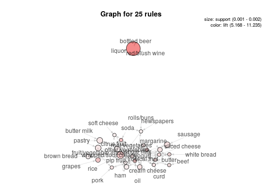plot(subrules2, method="graph", control=list(type="itemsets"))## try: plot(subrules2, method="graph", interactive=TRUE) ## try: plot(subrules2, method="graph", control=list(engine="graphviz")) ## parallel coordinates plot plot(subrules2, method="paracoord")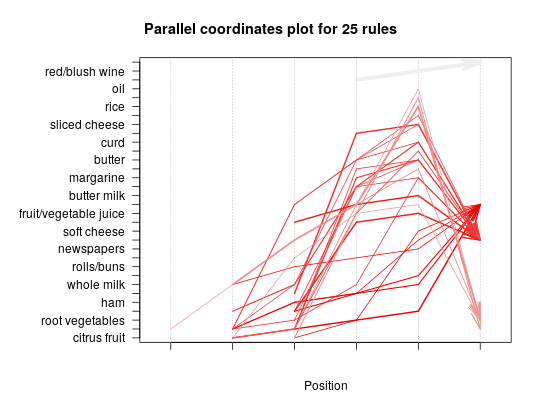plot(subrules2, method="paracoord", control=list(reorder=TRUE))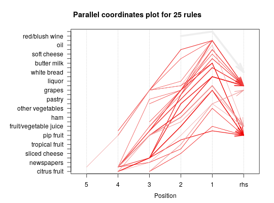#> lhs rhs support confidence lift #> [1] {herbs, #> whole milk, #> fruit/vegetable juice} => {other vegetables} 0.001016777 0.9090909 4.698323plot(oneRule, method="doubledecker", data = Groceries)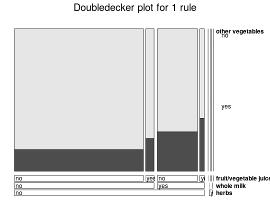## use iplots (experimental) ## try: sel <- plot(rules, method="iplots", interactive=TRUE) ## for itemsets itemsets <- eclat(Groceries, parameter = list(support = 0.02, minlen=2))#> Eclat #> #> parameter specification: #> tidLists support minlen maxlen target ext #> FALSE 0.02 2 10 frequent itemsets FALSE #> #> algorithmic control: #> sparse sort verbose #> 7 -2 TRUE #> #> Absolute minimum support count: 196 #> #> create itemset ... #> set transactions ...[169 item(s), 9835 transaction(s)] done [0.00s]. #> sorting and recoding items ... [59 item(s)] done [0.00s]. #> creating sparse bit matrix ... [59 row(s), 9835 column(s)] done [0.00s]. #> writing ... [63 set(s)] done [0.01s]. #> Creating S4 object ... done [0.00s].plot(itemsets)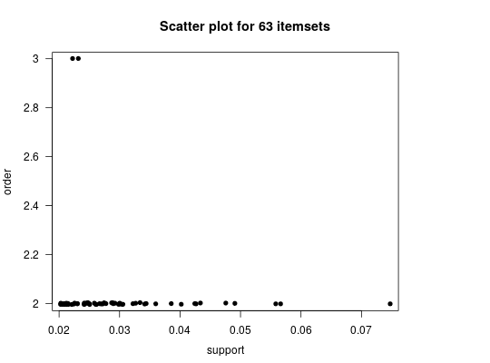plot(itemsets, method="graph")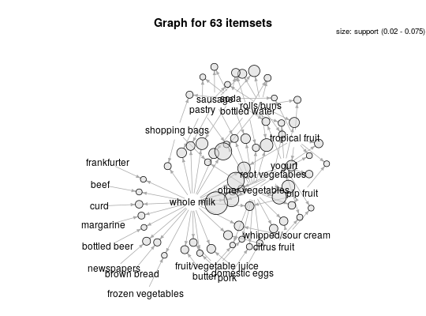plot(itemsets, method="paracoord", control=list(alpha=.5, reorder=TRUE))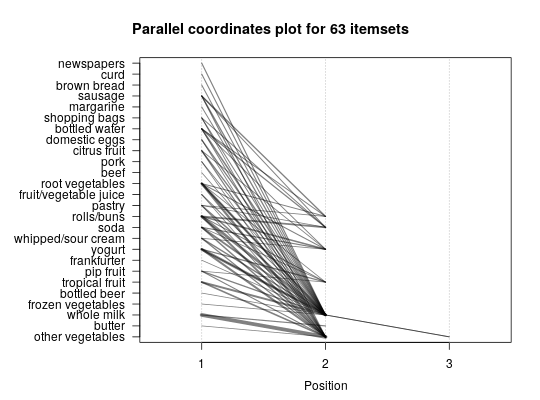## add more quality measures to use for the scatterplot quality(itemsets) <- interestMeasure(itemsets, trans=Groceries) head(quality(itemsets))#> support allConfidence crossSupportRatio lift #> 1 0.02043721 0.07998408 0.1882212 1.663094 #> 2 0.02125064 0.08316753 0.2053323 1.585180 #> 3 0.02613116 0.10226821 0.2085157 1.919481 #> 4 0.02216573 0.08674891 0.2256267 1.504719 #> 5 0.02165735 0.11192853 0.2979506 1.941476 #> 6 0.02053889 0.08038201 0.2307998 1.363029plot(itemsets, measure=c("support", "allConfidence"), shading="lift")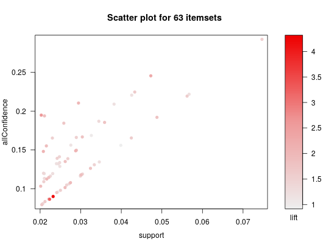